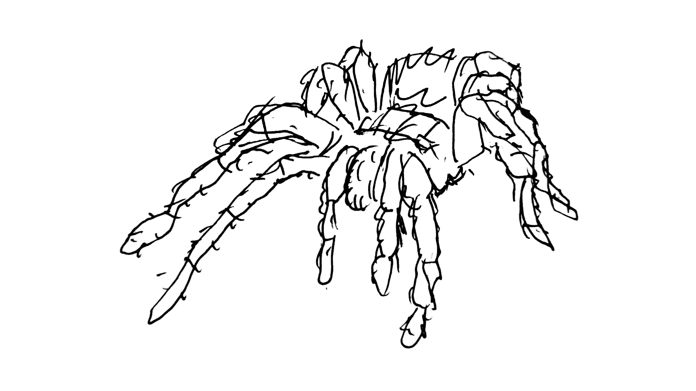

Икитос. Джунгли
Уехали с коллегами на несколько дней на Амазонку. "Отель" посреди джунглей, в полутора часах от Икитоса.
У нас ограничено есть связь когда мы "дома", благодаря шайтан-машине Илона Маска.
20 марта 2025 #
Отчёт за первый день: долетели до Икитоса, доплыли по Амазонке до нашего обиталища посреди джунглей.
Видели ленивца и местную сову. Гид поймал лягушку поменьше. Я поймал лягушку побольше. Гид поймал небольшого удава.
 Ленивец
Ленивец
 Сова
Сова
 Лягушка
Лягушка
 Удав
Удав
Интернет средней паршивости, так что это всё на сегодня.
Надеюсь отпишусь завтра если пираньи не сожрут.
Ой, похоже я забыл постить сюда отчёты о приключениях в джунглях. Нет, пираньи меня не сожрали. Но, к моему большому разочарованию, я пиранью тоже не сожрал. Подпробнее об этом расскажу в одном из отчётов ниже.
21 марта 2025 #
Ходили в джунгли, видели огромное дерево: 18 человек взялись вокруг него за руки и не хватило ещё человек 10, чтобы обхватить его. Но лес в принципе такой же как у нас в тайге, только растения другие.
Потом были в центре спасения животных. На нас сидели обезьяны разных видов.
 Обезьяны из местного приюта совсем ручные
Обезьяны из местного приюта совсем ручные
 Муравьед
Муравьед

Гид рассказывал, что местные заводят ленивцев как домашних животных. И сегодня мы сами увидели как в деревушке неподалёку дети бегают с ленивцем на шее. Мы, естественно, его позаимствовали, подержали на руках, пофотались и поснимали видео.
Потом были курасау (это такая большая птица), тукан, огромные черепахи, удав и попугаи Ара. Последних двух даже удалось подержать на руках.
 Курасау
Курасау
 Тукан
Тукан
 Удав
Удав
 Ара
Ара
 Черепахи. Не ниндзя
Черепахи. Не ниндзя
А, ну и опять купались в Амазонке, точнее не самой Амазонке, а одной из небольших речушек, в неё впадающих (что на самом деле ещё опаснее, т.к. вопреки обывательским представлениям пираньи, кайманы и электрические угри обитают в большей степени в мелких речках в амазонской сельве, а не самой Амазонке. В большой Амазонке для них слишком быстрое течение.
Довольные.
22 марта 2025 #
Ночью ходили в джунгли. Видели 2 скорпионов, 2 тарантулов, 2 огромных лягушек (около 20 см от носа до хвоста), геккона (ящерица такая), саламандру, тарантула и огромное количество прыгающих пауков и пауков-скорпионов.
 Жаба
Жаба
 Паук-скорпион
Паук-скорпион
 Ещё один
Ещё один
 Геккон
Геккон
 Ещё какой-то паук
Ещё какой-то паук
 Своя атмосфера
Своя атмосфера
 Тарантул
Тарантул
 Эта тварь сантиметров 20 в длину
Эта тварь сантиметров 20 в длину
 А эта около 10
А эта около 10
Когда вернулись, оказалось, что у нас в отеле в комнате отдыха тоже сидит большой тарантул.
 Добрый вечер
Добрый вечер
Утром плавали рыбачить. На пиранью. Но сейчас у них сезон дождей и они не голодные. Не поймали ни одной. Даже клевали плохо.
Поэтому вечером пошли во второй раз. И на этот раз удача была на нашей стороне. Я первым вытащил небольшую. Потом за мной половина наших вытащили по хвосту. И потом я вытащил ещё одну, покрупнее.
 И это называется покрупнее
И это называется покрупнее
Но в целом они мелкие, их местные за рыбу не считают и воспринимают ловлю пираний просто как развлечение для туристов. Моих пираний местный парень снял с крючка и не задумываясь выкинул за борт.
Потом поплыли смотреть розовых дельфинов. В Амазонке водятся серые и розовые. В итоге увидели двух, маму с детёнышем. Но снять не получилось, т.к. они быстро выныривают набрать воздуха и обратно ныряют.
И в завершение купались на большой Амазонке. В прошлые разы купались у отеля, там мелкая речушка - приток. А сегодня прям на большой Амазонке купались. Тут русло разбивается на два и купались в более маленьком, т.к. в нём течение слабее. В другом течение очень быстрое, там купаться запрещают.

Это был последний день в джунглях.
23 марта 2025 #
Утром 23-го марта нас отвезли в Икитос, где у нас был забронирован стол в ресторане Al Frio y Al Fuego. Ресторан расположен на мини островке, можно сказать плавучий. И чтобы до него добраться, нужно придти на определённый пирс, куда примерно раз в полчаса приходит лодка до ресторана.
Ресторан шикарный, еда шикарная, даже есть бассейн. Да, бассейн в ресторане на воде 🙂


Покушали, и часть из наших остались наслаждаться солнцем и бассейном, а часть отправилась изучать город.


 Местная достопримечательность - железный дом. Он реально весь из железа. Кому-то было мало шапочки из фольги 🙂
Местная достопримечательность - железный дом. Он реально весь из железа. Кому-то было мало шапочки из фольги 🙂


Ближе к вечеру все встретились в аэропорту и улетели в Лиму. В аэропорту Лимы мы попрощались со всеми, а сами тут же прыгнули в самолёт до Куско.